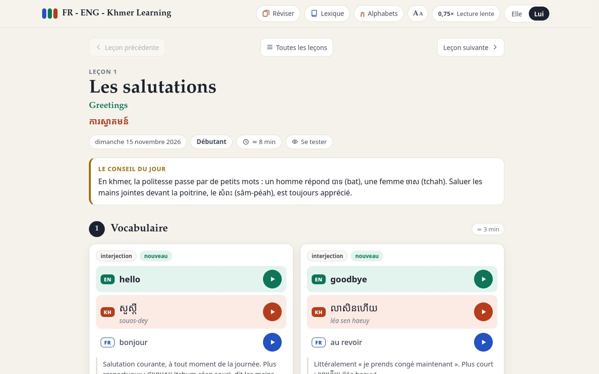

FR - ENG - Khmer Learning
A lesson of under ten minutes every morning, in French, English and Khmer, made for a French–Khmer couple. She learns French and English, with explanations in Khmer; he learns English and Khmer, with explanations in French and the Khmer spelled out in Latin letters. Every word, phrase and line of dialogue can be heard in the three languages. A small Python program writes the lessons, the audio and the pages; the site works offline and installs on a phone like an app.
Une leçon de moins de dix minutes chaque matin, en français, en anglais et en khmer, pensée pour un couple franco-khmer. Elle apprend le français et l’anglais, avec des explications en khmer ; il apprend l’anglais et le khmer, avec des explications en français et le khmer transcrit en lettres latines. Chaque mot, chaque expression et chaque réplique s’écoute dans les trois langues. Un petit programme Python écrit les leçons, l’audio et les pages ; le site fonctionne hors connexion et s’installe sur un téléphone comme une application.
មេរៀនតិចជាង 10 នាទីរៀងរាល់ព្រឹក ជាភាសាបារាំង អង់គ្លេស និងខ្មែរ ដែលបង្កើតឡើងសម្រាប់គូស្វាមីភរិយាបារាំង-ខ្មែរ។ នាងរៀនភាសាបារាំង និងអង់គ្លេស ដោយមានការពន្យល់ជាភាសាខ្មែរ ហើយគាត់រៀនភាសាអង់គ្លេស និងខ្មែរ ដោយមានការពន្យល់ជាភាសាបារាំង និងការសរសេរសំឡេងខ្មែរជាអក្សរឡាតាំង។ ពាក្យ ឃ្លា និងប្រយោគសន្ទនានីមួយៗ អាចស្តាប់បានជាបីភាសា។ កម្មវិធី Python តូចមួយសរសេរមេរៀន សំឡេង និងទំព័រ ហើយគេហទំព័រនេះដំណើរការដោយគ្មានអ៊ីនធឺណិត និងអាចដំឡើងលើទូរស័ព្ទដូចកម្មវិធីមួយ។

Ten minutes a day, for two.
The course is made for a couple who each learn the other’s language. A switch at the top of every page, Elle or Lui, picks the learner. For her, the explanations, tips and menus are in Khmer, numbers included; for him, they are in French, and every Khmer word comes with a Latin transcription. The words themselves are always shown in the three languages, so English is the shared ground.
A new lesson opens every morning at 7:00, Cambodia time. Forty are ready, from greetings and numbers to the doctor, the hotel and talking about the past, and each takes eight to ten minutes. The two learners are the characters of the dialogues: they meet in the kitchen, go to the market, order at a restaurant.
Five parts, under ten minutes.
| Part | Time | What it holds |
|---|---|---|
| Vocabulary | ≈ 3 min | Six new words in the three languages, with the part of speech, a note for the learner and an example sentence. |
| Useful phrases | ≈ 2 min | Four expressions for daily life. |
| Everyday sentences | ≈ 2 min | Three full sentences, each in a small situation. |
| Short dialogue | ≈ 2 min | An exchange between the two learners, to hear in one go or to play as a role. |
| Review | ≈ 1 min | Words seen 1, 3, 7, 14 and 30 days ago, three questions, a translation and a comprehension question, with hidden answers. |
Hear it, say it, keep it.
Every line spoken
Each word, example and line of dialogue has its own recording in French, English and Khmer. A 0.75× button slows every voice down, and a whole dialogue can be played straight through in one language.
Role play
Choose a character and a language: the page plays the other part, then waits for you to say your line before going on.
Flashcards
Series of 20 cards from past lessons, in four exercises: recognise the word, recall it, listen and choose, or type it, with a gentle “almost” for a small spelling slip. Words you miss come back sooner, in five boxes spaced from one to sixteen days.
Lexicon
Every word and expression already seen, newest first, with a search that works in the three languages and a play button on each one.
The two alphabets
The 33 Khmer consonants in their two series, the 23 vowels and the digits for him; the 26 Latin letters, the 9 French accents and 13 sounds to know for her, each with audio and example words.
Offline, on the phone
The site makes no network request and carries its own Khmer font. Added to the home screen, it opens like an app, with a tab bar, a dark theme and larger text on demand. Progress, the days in a row and the flashcard boxes are kept on the device.
Dix minutes par jour, à deux.
Le cours est pensé pour un couple où chacun apprend la langue de l’autre. Un bouton en haut de chaque page, Elle ou Lui, choisit l’apprenant. Pour elle, explications, conseils et menus sont en khmer, chiffres compris ; pour lui, ils sont en français, et chaque mot khmer est accompagné d’une transcription en lettres latines. Les mots eux-mêmes sont toujours donnés dans les trois langues : l’anglais sert de terrain commun.
Une nouvelle leçon s’ouvre chaque matin à 7 h, heure du Cambodge. Quarante sont prêtes, des salutations et des nombres jusqu’au médecin, à l’hôtel et au récit au passé, et chacune dure de huit à dix minutes. Les deux apprenants sont les personnages des dialogues : ils se retrouvent dans la cuisine, vont au marché, commandent au restaurant.
Cinq parties, moins de dix minutes.
| Partie | Durée | Ce qu’elle contient |
|---|---|---|
| Vocabulaire | ≈ 3 min | Six mots nouveaux dans les trois langues, avec la nature du mot, une note pour l’apprenant et une phrase d’exemple. |
| Expressions pratiques | ≈ 2 min | Quatre expressions de la vie de tous les jours. |
| Phrases de la vie quotidienne | ≈ 2 min | Trois phrases complètes, chacune dans une petite situation. |
| Petit dialogue | ≈ 2 min | Un échange entre les deux apprenants, à écouter d’une traite ou à jouer. |
| Révision | ≈ 1 min | Les mots vus il y a 1, 3, 7, 14 et 30 jours, trois questions, une traduction et une question de compréhension, avec les réponses masquées. |
L’entendre, le dire, le retenir.
Tout est lu à voix haute
Chaque mot, chaque exemple et chaque réplique a son enregistrement en français, en anglais et en khmer. Un bouton 0,75× ralentit toutes les voix, et un dialogue entier peut s’écouter d’un seul tenant dans une langue.
Jeu de rôle
Choisissez un personnage et une langue : la page joue l’autre rôle, puis attend que vous disiez votre réplique avant de continuer.
Cartes mémoire
Des séries de 20 cartes tirées des leçons passées, en quatre exercices : reconnaître le mot, le retrouver, écouter et choisir, ou l’écrire, avec un « presque » indulgent pour une petite faute d’orthographe. Les mots ratés reviennent plus vite, dans cinq boîtes espacées de un à seize jours.
Lexique
Tous les mots et expressions déjà vus, du plus récent au plus ancien, avec une recherche dans les trois langues et un bouton d’écoute pour chacun.
Les deux alphabets
Les 33 consonnes khmères dans leurs deux séries, les 23 voyelles et les chiffres pour lui ; les 26 lettres latines, les 9 accents du français et 13 sons à connaître pour elle, chacun avec l’audio et des mots d’exemple.
Hors connexion, sur le téléphone
Le site ne fait aucune requête réseau et embarque sa propre police khmère. Ajouté à l’écran d’accueil, il s’ouvre comme une application, avec une barre d’onglets, un thème sombre et un texte agrandi à la demande. La progression, les jours d’affilée et les boîtes des cartes restent sur l’appareil.
10 នាទីក្នុងមួយថ្ងៃ សម្រាប់មនុស្សពីរនាក់។
វគ្គសិក្សានេះបង្កើតឡើងសម្រាប់គូស្វាមីភរិយា ដែលម្នាក់ៗរៀនភាសារបស់ម្នាក់ទៀត។ ប៊ូតុងនៅខាងលើទំព័រនីមួយៗ Elle ឬ Lui ជ្រើសរើសអ្នករៀន។ សម្រាប់នាង ការពន្យល់ គន្លឹះ និងម៉ឺនុយ គឺជាភាសាខ្មែរ រួមទាំងលេខខ្មែរផង។ សម្រាប់គាត់ ពួកវាជាភាសាបារាំង ហើយពាក្យខ្មែរនីមួយៗមានការសរសេរសំឡេងជាអក្សរឡាតាំង។ ពាក្យទាំងអស់តែងតែបង្ហាញជាបីភាសា ដូច្នេះភាសាអង់គ្លេសក្លាយជាចំណុចរួមរបស់អ្នកទាំងពីរ។
មេរៀនថ្មីមួយបើករៀងរាល់ព្រឹកនៅម៉ោង 7 តាមម៉ោងកម្ពុជា។ មេរៀន 40 រួចរាល់ហើយ ចាប់ពីការស្វាគមន៍ និងលេខ រហូតដល់ការទៅជួបគ្រូពេទ្យ សណ្ឋាគារ និងការនិយាយអំពីអតីតកាល ហើយមេរៀននីមួយៗចំណាយពេលពី 8 ទៅ 10 នាទី។ អ្នករៀនទាំងពីរគឺជាតួអង្គក្នុងការសន្ទនា៖ ពួកគេជួបគ្នានៅផ្ទះបាយ ទៅផ្សារ និងកុម្ម៉ង់ម្ហូបនៅភោជនីយដ្ឋាន។
ប្រាំផ្នែក តិចជាង 10 នាទី។
| ផ្នែក | រយៈពេល | អ្វីដែលមាន |
|---|---|---|
| វាក្យសព្ទ | ≈ 3 នាទី | ពាក្យថ្មី 6 ជាបីភាសា ជាមួយថ្នាក់ពាក្យ កំណត់សម្គាល់សម្រាប់អ្នករៀន និងប្រយោគឧទាហរណ៍។ |
| ឃ្លាមានប្រយោជន៍ | ≈ 2 នាទី | ឃ្លា 4 សម្រាប់ជីវិតប្រចាំថ្ងៃ។ |
| ប្រយោគក្នុងជីវិតប្រចាំថ្ងៃ | ≈ 2 នាទី | ប្រយោគពេញ 3 ដែលនីមួយៗស្ថិតក្នុងស្ថានភាពជាក់ស្តែង។ |
| ការសន្ទនាខ្លី | ≈ 2 នាទី | ការសន្ទនារវាងអ្នករៀនទាំងពីរ ដែលអាចស្តាប់ម្តងទាំងមូល ឬលេងជាតួអង្គ។ |
| ការរំលឹកមេរៀន | ≈ 1 នាទី | ពាក្យដែលបានរៀនកាលពី 1, 3, 7, 14 និង 30 ថ្ងៃមុន សំណួរខ្លីបី លំហាត់បកប្រែ និងសំណួរយល់ន័យ ដោយចម្លើយត្រូវបានលាក់។ |
ស្តាប់ និយាយ ហើយចងចាំ។
គ្រប់ឃ្លាមានសំឡេង
ពាក្យ ឧទាហរណ៍ និងប្រយោគសន្ទនានីមួយៗ មានសំឡេងថតផ្ទាល់ខ្លួនជាភាសាបារាំង អង់គ្លេស និងខ្មែរ។ ប៊ូតុង 0.75× ធ្វើឱ្យសំឡេងទាំងអស់យឺតជាងមុន ហើយការសន្ទនាទាំងមូលអាចស្តាប់ជាប់គ្នាជាភាសាតែមួយ។
លេងតួអង្គ
ជ្រើសរើសតួអង្គមួយ និងភាសាមួយ៖ ទំព័រនេះលេងតួម្ខាងទៀត រួចរង់ចាំឱ្យអ្នកនិយាយឃ្លារបស់អ្នក មុននឹងបន្ត។
កាតចងចាំ
មួយវគ្គមាន 20 កាត ដកស្រង់ពីមេរៀនមុនៗ ក្នុងលំហាត់បួនប្រភេទ៖ ស្គាល់ពាក្យ នឹកឃើញពាក្យ ស្តាប់ហើយជ្រើសរើស ឬសរសេរពាក្យ ដោយមានពាក្យ «ជិតត្រូវហើយ» សម្រាប់កំហុសអក្ខរាវិរុទ្ធតិចតួច។ ពាក្យដែលភ្លេច នឹងត្រឡប់មកវិញលឿនជាងមុន ក្នុងប្រអប់ប្រាំ ដែលមានគម្លាតពី 1 ទៅ 16 ថ្ងៃ។
សទ្ទានុក្រម
ពាក្យ និងឃ្លាទាំងអស់ដែលបានរៀនរួច ពីថ្មីបំផុតទៅចាស់បំផុត ជាមួយការស្វែងរកជាបីភាសា និងប៊ូតុងស្តាប់សម្រាប់ពាក្យនីមួយៗ។
អក្សរទាំងពីរ
ព្យញ្ជនៈខ្មែរ 33 តួ ក្នុងវគ្គទាំងពីរ ស្រៈ 23 និងលេខ សម្រាប់គាត់។ អក្សរឡាតាំង 26 តួ សញ្ញាសំឡេងភាសាបារាំង 9 និងសំឡេង 13 ដែលត្រូវដឹង សម្រាប់នាង។ នីមួយៗមានសំឡេង និងពាក្យឧទាហរណ៍។
គ្មានអ៊ីនធឺណិត លើទូរស័ព្ទ
គេហទំព័រនេះមិនស្នើសុំអ្វីពីបណ្តាញទេ ហើយមានពុម្ពអក្សរខ្មែរផ្ទាល់ខ្លួន។ ពេលបន្ថែមទៅអេក្រង់ដើម វាបើកដូចកម្មវិធីមួយ ជាមួយរបារផ្ទាំង ផ្ទៃងងឹត និងអក្សរធំតាមតម្រូវការ។ វឌ្ឍនភាព ចំនួនថ្ងៃជាប់គ្នា និងប្រអប់កាតចងចាំ ត្រូវបានរក្សាទុកនៅលើឧបករណ៍។
A look inside.Le cours en images.វគ្គសិក្សាតាមរយៈរូបភាព។


How it is built.
| Generator | About 5,200 lines of Python, standard library only. Every morning at 7:00 it takes the next unit of the programme, adds the words due for review, records the missing audio, writes the lesson page and updates the home page, the flashcards and the lexicon. |
| Programme | 50 units written as JSON files: 12 beginner, 12 elementary and 26 intermediate. Once they are used up, review lessons are built from the least well-known words, and new units can be dropped in at any time. |
| Progress | A SQLite database follows each word for both learners, with the 1-3-7-14-30 day review schedule. In the browser, progress is kept on the device; served from home with manage.py serve, it is merged across the phone, the tablet and the computer. |
| Voices | One layer for three speech engines: Google Cloud Text-to-Speech for French and English, Azure AI Speech for Khmer (Google offers no Khmer voice), or any command-line engine. The clips on the published site were made through the last one, with Google Translate’s voices. |
| Audio files | 3,185 WAV clips, 16-bit mono at 24 kHz, about 350 MB. Each file is named after a fingerprint of its text, language, voice and settings, so the same sentence is never recorded twice. |
| Site | Plain HTML, CSS and JavaScript, about 2,100 lines for the style and the behaviour, with Noto Sans Khmer embedded and a web app manifest. No framework and no network request; GitHub Pages serves the folder as it is. |
| Tests | 72 automated tests, with a fake speech engine and fake Google and Azure servers, and a check in headless Firefox that the Khmer font, the search, the audio playback and the offline mode really work. |
Comment c’est construit.
| Générateur | Environ 5 200 lignes de Python, uniquement la bibliothèque standard. Chaque matin à 7 h, il prend l’unité suivante du programme, ajoute les mots à réviser, enregistre l’audio manquant, écrit la page de la leçon et met à jour l’accueil, les cartes mémoire et le lexique. |
| Programme | 50 unités écrites en fichiers JSON : 12 de niveau débutant, 12 élémentaire et 26 intermédiaire. Une fois épuisées, des leçons de révision sont composées à partir des mots les moins bien connus, et de nouvelles unités peuvent être ajoutées à tout moment. |
| Progression | Une base SQLite suit chaque mot pour les deux apprenants, avec les révisions à 1, 3, 7, 14 et 30 jours. Dans le navigateur, la progression reste sur l’appareil ; servie depuis la maison avec manage.py serve, elle est fusionnée entre le téléphone, la tablette et l’ordinateur. |
| Voix | Une seule couche pour trois moteurs vocaux : Google Cloud Text-to-Speech pour le français et l’anglais, Azure AI Speech pour le khmer (Google ne propose aucune voix khmère), ou n’importe quel moteur en ligne de commande. Les enregistrements du site publié ont été faits par ce dernier, avec les voix de Google Traduction. |
| Fichiers audio | 3 185 fichiers WAV, mono 16 bits à 24 kHz, environ 350 Mo. Chaque fichier porte l’empreinte de son texte, de sa langue, de sa voix et de ses réglages : une même phrase n’est jamais enregistrée deux fois. |
| Site | HTML, CSS et JavaScript natifs, environ 2 100 lignes pour le style et le comportement, avec Noto Sans Khmer embarquée et un manifeste d’application web. Aucun framework ni requête réseau ; GitHub Pages sert le dossier tel quel. |
| Tests | 72 tests automatiques, avec un moteur vocal factice et de faux serveurs Google et Azure, et un contrôle dans Firefox sans affichage : police khmère, recherche, lecture audio et fonctionnement hors connexion. |
របៀបដែលវាត្រូវបានបង្កើត។
| កម្មវិធីបង្កើត | កូដ Python ប្រហែល 5 200 បន្ទាត់ ដោយប្រើតែ standard library ប៉ុណ្ណោះ។ រៀងរាល់ព្រឹកម៉ោង 7 វាយកមេរៀនបន្ទាប់ពីកម្មវិធីសិក្សា បន្ថែមពាក្យដែលត្រូវរំលឹក ថតសំឡេងដែលនៅខ្វះ សរសេរទំព័រមេរៀន ហើយធ្វើបច្ចុប្បន្នភាពទំព័រដើម កាតចងចាំ និងសទ្ទានុក្រម។ |
| កម្មវិធីសិក្សា | មេរៀន 50 ដែលសរសេរជាឯកសារ JSON៖ កម្រិតដំបូង 12 កម្រិតបឋម 12 និងកម្រិតមធ្យម 26។ នៅពេលប្រើអស់ មេរៀនរំលឹកត្រូវបានបង្កើតឡើងពីពាក្យដែលចាំតិចជាងគេ ហើយអាចបន្ថែមមេរៀនថ្មីបានគ្រប់ពេល។ |
| វឌ្ឍនភាព | មូលដ្ឋានទិន្នន័យ SQLite តាមដានពាក្យនីមួយៗសម្រាប់អ្នករៀនទាំងពីរ ជាមួយការរំលឹកនៅថ្ងៃទី 1, 3, 7, 14 និង 30។ នៅក្នុង browser វឌ្ឍនភាពត្រូវបានរក្សាទុកលើឧបករណ៍ ហើយពេលដំណើរការពីផ្ទះដោយ manage.py serve វាត្រូវបានបញ្ចូលគ្នារវាងទូរស័ព្ទ tablet និងកុំព្យូទ័រ។ |
| សំឡេង | ស្រទាប់តែមួយសម្រាប់ម៉ាស៊ីនសំឡេងបី៖ Google Cloud Text-to-Speech សម្រាប់ភាសាបារាំង និងអង់គ្លេស Azure AI Speech សម្រាប់ភាសាខ្មែរ (Google គ្មានសំឡេងខ្មែរទេ) ឬម៉ាស៊ីន command-line ណាមួយ។ សំឡេងនៅលើគេហទំព័រដែលបានបោះផ្សាយ ត្រូវបានធ្វើតាមវិធីចុងក្រោយនេះ ជាមួយសំឡេងរបស់ Google Translate។ |
| ឯកសារសំឡេង | ឯកសារ WAV ចំនួន 3 185 ជា mono 16 bits នៅ 24 kHz ប្រហែល 350 MB។ ឯកសារនីមួយៗមានឈ្មោះតាមស្នាមម្រាមដៃនៃអត្ថបទ ភាសា សំឡេង និងការកំណត់របស់វា ដូច្នេះប្រយោគដដែលមិនដែលត្រូវថតពីរដងទេ។ |
| គេហទំព័រ | HTML, CSS និង JavaScript ដើម ប្រហែល 2 100 បន្ទាត់សម្រាប់រចនាប័ទ្ម និងដំណើរការ ជាមួយពុម្ពអក្សរ Noto Sans Khmer ដែលភ្ជាប់មកជាមួយ និង web app manifest។ គ្មាន framework និងគ្មានការស្នើសុំបណ្តាញ ហើយ GitHub Pages បង្ហាញថតឯកសារដូចដែលវាមាន។ |
| ការធ្វើតេស្ត | តេស្តស្វ័យប្រវត្តិ 72 ជាមួយម៉ាស៊ីនសំឡេងក្លែងក្លាយ និង server Google និង Azure ក្លែងក្លាយ ព្រមទាំងការពិនិត្យនៅក្នុង Firefox ដោយគ្មានផ្ទាំងបង្ហាញ៖ ពុម្ពអក្សរខ្មែរ ការស្វែងរក ការចាក់សំឡេង និងការដំណើរការដោយគ្មានអ៊ីនធឺណិត។ |